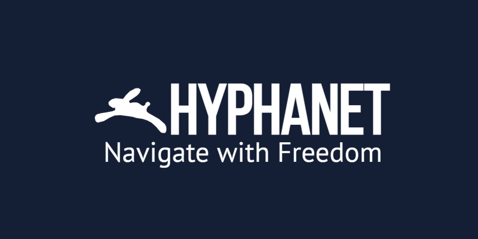

Freenet (Hyphanet)
A Freenet, vagy ahogy ma hívják, a Hyphanet, egy elosztott adattároló hálózat. A tartalmak titkosítva, a felhasználók gépein szétosztva vannak tárolva.
Nincs központi szerver, ezért egy oldal akkor is elérhető marad, ha aki feltöltötte, már offline. Cenzúrázni is nehéz.
Az a különlegessége, hogy nem a forgalmat, hanem magát az információt őrzi meg.
A Freenet lassú, és nem a hagyományos weboldalak böngészésére való. A tartalmak elérése néha percekig tart, mert a rendszer több gépről gyűjti össze az adatot. Cserébe a közzétett tartalom hosszú távon megmarad, ezért főleg a cenzúra elleni megőrzésre használják.